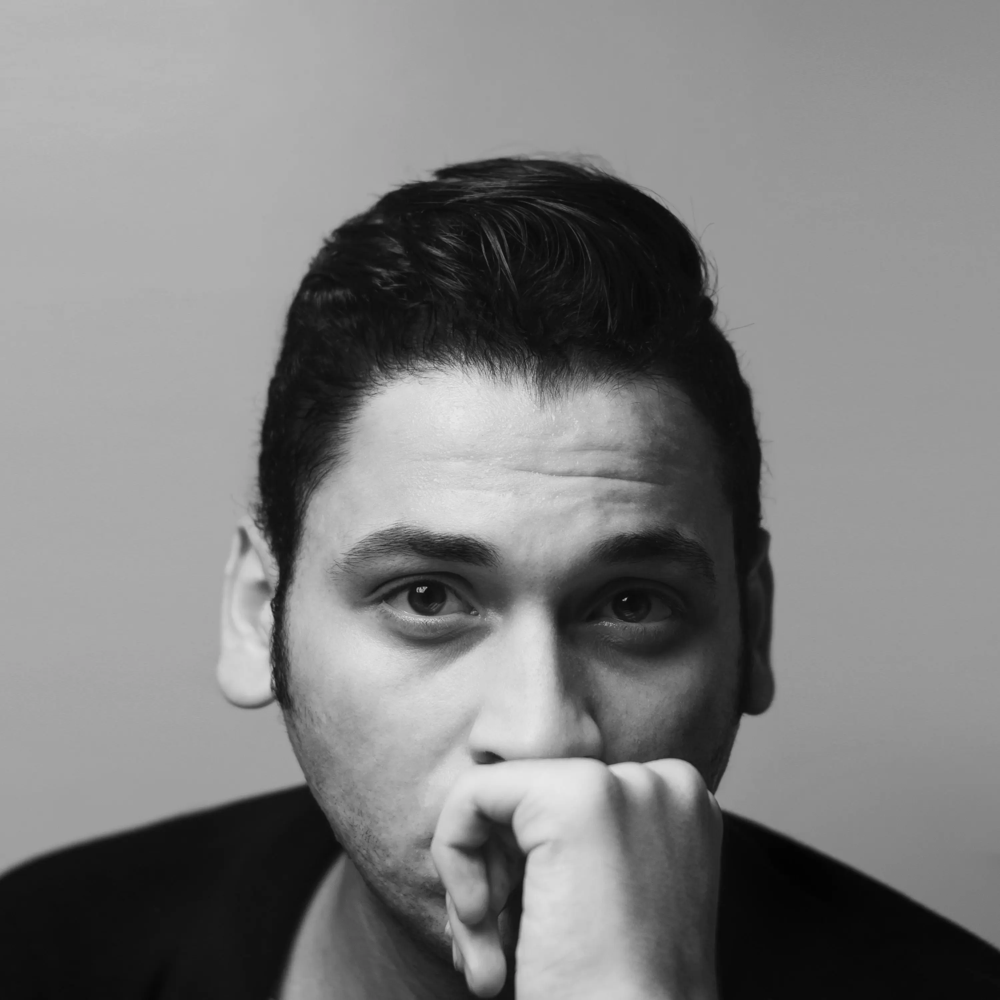

HOSSAM MOHAMED OMAR
Senior Technical Artist & Lead Video Editor | 3D Motion Designer
Bridging mechanical/structural accuracy with cinematic storytelling. 5+ years building high-retention edutainment documentaries, photorealistic 3D product visualizations, and custom pipeline automation tools.
Professional Summary
Multi-disciplinary Senior Technical Artist, 3D Specialist, and Lead Video Editor with an Engineering degree and 5+ years of experience executing high-retention edutainment documentaries and agency-level visual assets. Proven track record single-handedly delivering 30+ minute long-form edits, custom procedural 3D animations, photorealistic product visualizations, and cinematic sound design for major digital media brands reaching over 13M+ subscribers.
Professional Experience
Lead Video Editor & Technical Animator
Be Amazed Media (UK-Based / Remote)
- Executed complete end-to-end post-production pipelines for long-form edutainment videos (10–35+ mins) reaching an audience of 13M+ subscribers.
- Mastered dialogue processing, stock research, cinematic sound design, and visual pacing to maintain ultra-high viewer retention.
- Designed and animated custom 3D procedural Blender graphics and mechanical animations to illustrate complex concepts.
- Built custom Python and AHK automation tools to streamline rendering and timeline sync, cutting export times across high-volume edit cycles.
3D Visualization Specialist & Technical Artist
Remote / Digital Agencies
- Spearheaded 3D visualization pipelines for premium industrial, maritime, and automotive clients (KingFisher Boats, Titan Boats, Off Grid Trailers, 23Zero).
- Converted technical CAD schematics into photorealistic 3D assets, exploded-view animations, and cinematic product walkthroughs.
- Developed AeSync (custom local server script for live Blender-to-After Effects sync) and Python image-stitching utilities to render 256-megapixel multi-layer EXR canvases without GPU limits.